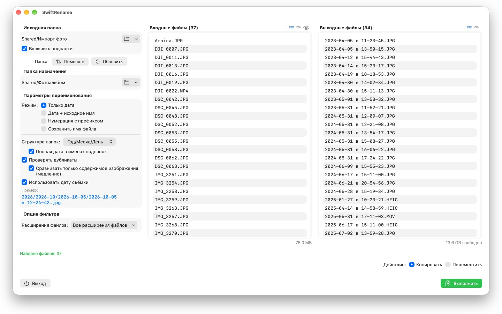
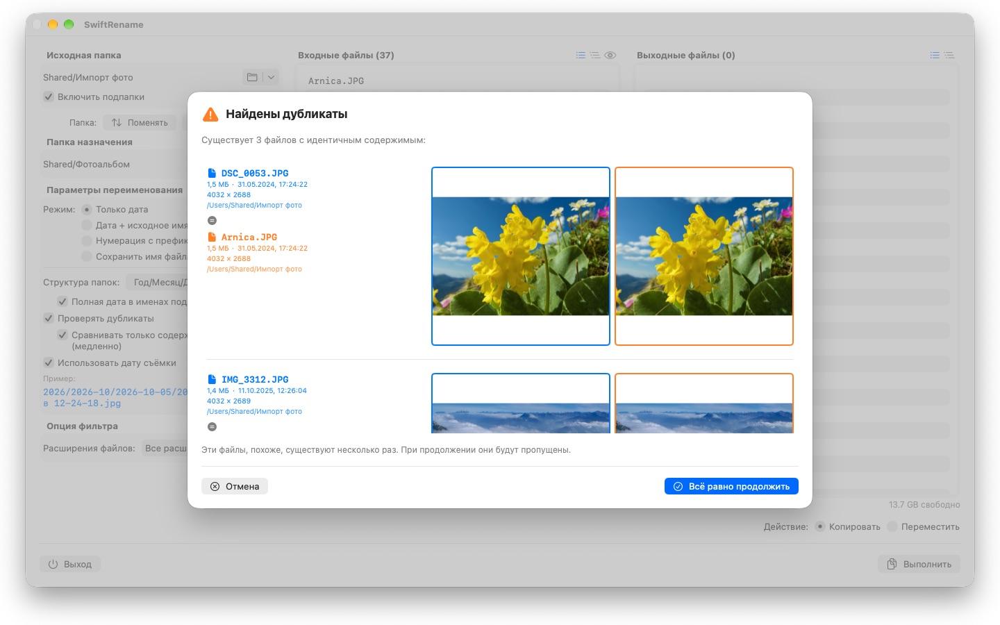

Переименуйте сотни фото и файлов за один раз — по дате съёмки, с нумерацией или сортировкой в папки по годам и месяцам. Дубликаты находятся и пропускаются автоматически.



SwiftRename — это мощный инструмент для пакетного переименования, копирования и перемещения файлов на вашем Mac. Выберите папку, задайте, как должны выглядеть новые имена, посмотрите на предпросмотр в реальном времени — и запускайте.
24 языка: Deutsch · English · Español · Français · Italiano · Nederlands · Português · Svenska · Norsk · Suomi · Polski · Čeština · Hrvatski · Magyar · Română · Türkçe · Русский · Українська · فارسی · ไทย · 日本語 · 한국어 · 简体中文 · 繁體中文
РЕЖИМЫ ПЕРЕИМЕНОВАНИЯ
- Только дата: имена по дате файла (например, 2024-01-15 в 14-30-00)
- Дата + исходное имя: дата добавляется в начало, исходное имя сохраняется
- Нумерация с префиксом: последовательная нумерация с вашим собственным префиксом (например, Поездка_0001)
- Сохранить имя файла: имена не меняются, файлы только раскладываются по папкам
СТРУКТУРА ПАПОК
Раскладывайте файлы по папкам автоматически — по годам, месяцам или дням, а при желании с полной датой в имени каждой подпапки (например, 2026/2026-02/2026-02-20). Для файлов, охватывающих несколько десятилетий, сверху создаются папки десятилетий. Либо выберите «Сохранить», чтобы воспроизвести структуру подпапок исходной папки в папке назначения.
ДАТА СЪЁМКИ
Фотографии и видео получают имена по моменту, когда они действительно были сняты: SwiftRename считывает дату съёмки (EXIF) — из RAW-форматов всех основных производителей камер (Canon, Nikon, Sony, Fujifilm и многих других), а также из HEIC, JPEG, PNG, TIFF и распространённых видеоформатов. Если у файла нет даты съёмки, вместо неё используется дата создания.
ОБНАРУЖЕНИЕ ДУБЛИКАТОВ
Дубликаты определяются по размеру и содержимому файла — независимо от даты создания, поэтому одно и то же фото с другой отметкой времени не проскользнёт незамеченным. Дополнительное сравнение изображений находит даже фотографии, пересохранённые другими приложениями. Миниатюры позволяют сравнить оба файла бок о бок; дубликаты пропускаются автоматически.
ДОПОЛНИТЕЛЬНЫЕ ВОЗМОЖНОСТИ
- Копирование или перемещение в один клик — включая переименование на месте в той же папке
- Быстрый доступ к недавно использованным папкам ввода и вывода
- Включение подпапок; просмотр списков файлов в виде плоского списка или дерева папок
- Фильтрация расширений файлов с множественным выбором
- Предпросмотр новых имён в реальном времени, прежде чем что-либо будет изменено
- Отмена и повтор для целых операций (Cmd+Z)
- Индикатор выполнения с именем файла и процентами — отмена в любой момент
- Свободное место на диске проверяется перед началом операции
- Перетаскивание папок прямо из Finder
Всё остаётся на вашем Mac. Никаких сетевых подключений, учётных записей и сбора данных.
- Требуется macOS 12 или новее
- 24 языка
- Поддержка: SwiftAppsBavaria@gmx.net
Другие приложения
sCollect
Упорядочивание музыки, фильмов, аудиокниг, электронных книг и других коллекций в медиатеке.
sCollectPlay
Проигрыватель для медиатеки: воспроизведение музыки, фильмов, аудиокниг и подкастов просто из папки, файла iTunes XML или медиатеки sCollect — теги файлов при этом не меняются.
sName2Date
Запись даты из имени файла как даты съёмки в фотографии, фильмы и аудиозаписи — чтобы файл вроде IMG_20240115_103000.jpg правильно сортировался в любой программе для управления фотографиями.
sName2Date Lite
Версия для одного файла за проход: запись даты из имени файла как даты съёмки в фотографию, фильм или аудиозапись, ручная установка даты, приведение имени к формату ISO и отмена всего сочетанием ⌘Z — те же возможности, что и у sName2Date, только без целых папок.
sVectorLift
Открытие, просмотр и сохранение старого векторного клипарта в формате SVG — CorelDRAW, Windows Metafile и CGM.
sCollectPlay Lite
Облегчённая версия sCollectPlay: просто откройте папку, файл iTunes XML или медиатеку sCollect и воспроизводите из них музыку, фильмы, аудиокниги и подкасты — со списками воспроизведения, звуковыми дорожками и дорожками субтитров, замедленным воспроизведением и покадровым переходом. Один источник за сеанс; браузер по столбцам, собственные списки воспроизведения и недавно использованные источники доступны только в полной версии.
sBikeBridge
Анализ велопоездок без загрузки на какой-либо портал: чтение файлов FIT с любого велокомпьютера, который записывает в этом формате, а также GPX и TCX. Поездки хранятся в собственной библиотеке на Mac — с картой, мощностью и пульсом, фотографиями и заметками; дубликаты распознаются при импорте. Показатели по годам или месяцам и фильтры по дистанции, набору высоты и продолжительности позволяют сравнивать поездки. По желанию карта доступна и офлайн.